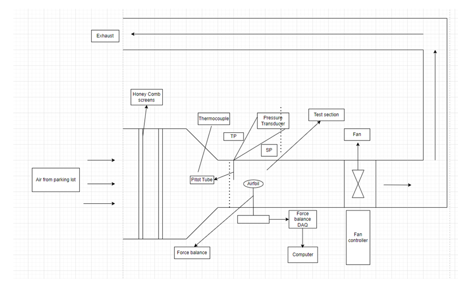

Introduction
Main objective of this lab was to see how the Cl and Cd varies with addition of different types of winglets to the Eppler 212 finite wing. Firstly, to account for gravity bias we run the wind tunnel at 10 Hz and record the normal and axial forces going from-15° to 25°. Then we insert Eppler 212 without winglets and record the axial and normal forces at-15° to 25°. This process is repeated for Re = 100 k and 200 K. Then the winglet is added to Eppler 212 and the process is repeated again. Winglets belong to 3 families. 1- Different positions. 2 Different angles. 3- Different lengths. In total 3 winglets are tested from each family. Drag polar graph was plotted for each winglet. From the graph we can see that the best winglet was 60 deg since it had higher Cl value at Re 100 K and 200 K. Also 60 deg winglets had lower Cd values for both 100 K and 200 K Re. We could also see that Cl increases with an increase in Re. And Cd decreases with an increase Re. In conclusion Re has a positive relation with Cl and a negative relation with Cd. So from this experiment we can conclude that higher angle, short length and mid position gives us the best results from all 3 families.

Figure 1 (shows types of winglets used)
From figure 1 we can see that a total of 10 different wingelt types were used for each Reynolds number. Then from this we determined which winglet produced the best results.
